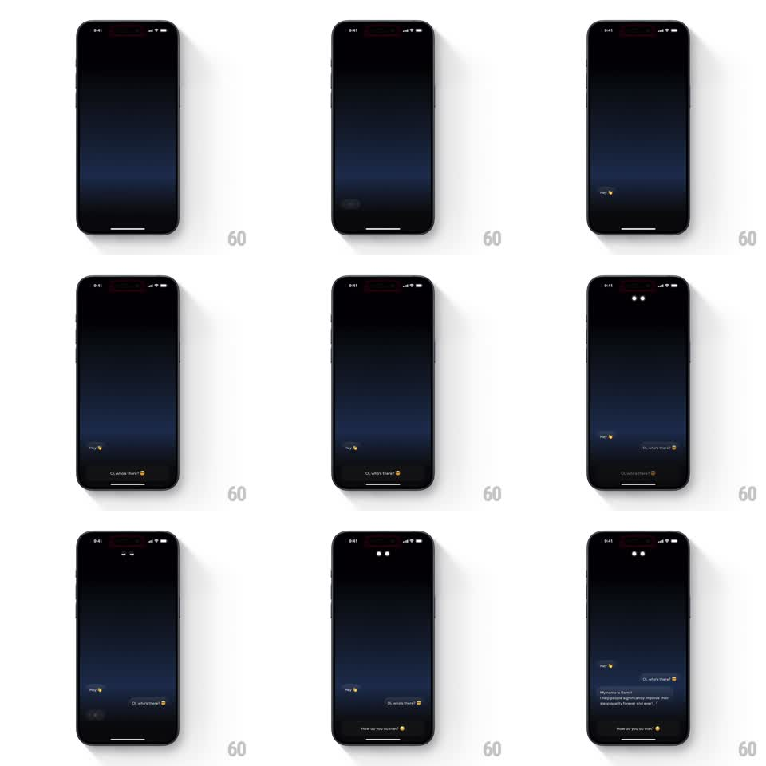

Media
Frame-by-frame

Rebuild this interaction 1:1: Remy AI's onboarding chat - messages bubble in from the bottom of an empty dark screen, a typing indicator morphs into the mascot's reply, and the mascot's eyes appear at the top as the conversation starts.

Rebuild this interaction 1:1: Remy AI's onboarding chat - messages bubble in from the bottom of an empty dark screen, a typing indicator morphs into the mascot's reply, and the mascot's eyes appear at the top as the conversation starts.
## Integration
Integration: stack-agnostic spec - springs given as stiffness/damping, timed motions as duration + curve; map every value to your framework and animation library of choice.
## Scene
An empty dark chat screen. A tiny mascot bubble says "Hey 👋"; a user reply bubble reads "Oi, who's there? 😄". A typing indicator appears, then the mascot's two glowing eyes fade in at the top of the screen, and a longer bubble introduces Remy ("My name is Remy! I help people significantly improve their sleep quality forever. And ever."), followed by another quick reply chip ("How do you do that? 😏").
## Motion spec
Pattern: springy chat reveal with morphing typing indicator, ~3.5s.
- The first bubble pops in from the bottom (scale 0.8 to 1, spring stiffness 400 damping 20).
- The user reply slides in from the right edge of its bubble anchor (300ms, ease-out) after a 500ms beat.
- A typing indicator (three dots in a bubble shell) bounces its dots in a 600ms loop for two cycles, then the shell morphs - stretching and fading - into the full reply bubble (300ms).
- As the reply lands, the mascot's eyes fade in at the top (400ms) with a soft glow pulse.
- The final quick-reply chip pops in at the bottom (spring stiffness 400 damping 20).
## Calibration
- Each message gets its own beat; nothing overlaps.
- Bubbles scale from their tail corner, not their center.
## Reduced motion
Thread appears fully rendered.
## Don't miss
- The eyes belong to the mascot, not the chat - they sit in the header area, separate from the bubbles.
- The typing indicator and the reply bubble are the same shell shape at different sizes.